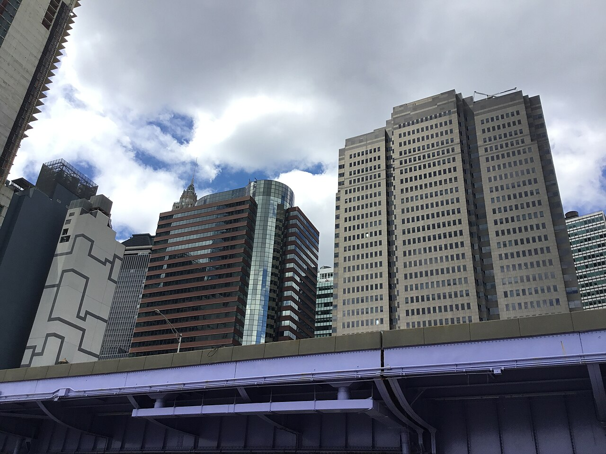

National "office crisis" headlines hide a San Francisco crisis — and a Manhattan split.
By Reade Decker·Original research project
Vacancy roughly tripled in five years and hundreds of billions in office
value were repriced — but the shock looks very different in San Francisco,
New York, and Washington, D.C. This project asks what kind of
progress hides inside that repricing: who gains option value when
offices are forced to evolve.
The stakes: hundreds of billions repriced — but not evenly. Who captures the upside?
19.6%
U.S. office vacancy (Q1 2025)
24%
Moody's peak vacancy scenario
$556.8B
Illustrative nationwide office value destruction (literature)
22.65%
SF vacancy context (major-city stat pack)
What you won't get from a headline
Original data: hand-curated Q4 panel for SF, Manhattan, and D.C. (2015–2024) —
vacancy, Class A rent, and sublease — harmonized from primary PDFs, not one vendor API.
Geographic shock: SF vacancy +31.4 pp vs. D.C. +4.2 pp — roughly a
7× gap inside one country after the same pandemic shock.
Leading signal: sublease spiked in all three cities before direct vacancy
peaked — an early distress window national stats miss.
About this project
Context
U.S. office vacancy is at multi-decade highs; Moody's projects a peak
around 24% in 2026. Tech-heavy downtowns and large monocentric markets
absorb very different hits — with knock-on effects on tax bases, foot
traffic, and lender balance sheets.
Literature
Lease-level work by Gupta, Mittal, and Van Nieuwerburgh (NYC ~46% long-run
decline), Moody's vacancy forecasts, Cushman & Wakefield and Colliers
market reports, the NYC Comptroller's doom-loop framing, and J.P. Morgan
on bank CRE exposure.
Research question
When office values reprice after a demand shock, who wins and who
loses — across cities, asset classes, and investor types — and what
does the SF / NYC / D.C. gap reveal about how distributed the pain is?
Why this is progress
Forced repricing reallocates capital, space, and people from saturated
office use to higher-value ones — conversions, lab buildouts, mixed-use
downtowns, and a cheaper basis for adaptive reuse.
Progress lens
Engine: When a land use saturates, repricing forces capital toward
adaptive reuse — office-to-residential conversions, lab buildouts, mixed-use downtowns.
Bottleneck: Zoning, conversion economics, and municipal dependence on
office property-tax assessments slow the transition.
Inequality: Patient capital and trophy landlords gain option value;
downtown workers in office-adjacent services and small businesses bear the employment
and fiscal cost first.
Future: Whether a city enters a doom loop or boom loop depends on
policy (conversions, tax reform) and whether distressed basis clears fast enough for
new uses to take hold.
Downtown San Francisco during curfew, June 2020 — early signal of the office foot-traffic collapse.
Wikimedia Commons
· CC BY-SA 4.0 · David Mark
Lease-level study estimates a
46% long-run decline in NYC office values.
02 — The cities (interactive)
Why these three cities?
Same national shock, three adjustment paths. I compare cities rather than going
deep on one because a single market cannot show whether the pain is geographic,
within-market, or fiscal — the comparison captures variation national headlines hide.
What they share
Major U.S. office CBDs hit by the same post-COVID / WFH demand shock; harmonized
Q4 panel (2015–2024) on vacancy, Class A asking rent, and sublease space.
Lower Manhattan panorama — office towers across the Hudson.
Wikimedia Commons
· CC BY-SA 4.0 · King of Hearts
Fiscal exposure — slower vacancy burn, but property-tax and assessment risk.
General trends each city faces
San Francisco
Vacancy spiral: 5.2% → 36.6% (2019–2024) as tech and WFH emptied downtown faster than anywhere else.
Rent compression: Class A asking rent fell $80 → $70/sf — landlords cutting to compete for fewer tenants.
Sublease flood: tenants listed ~9 M sq ft (~5× pre-COVID) before official vacancy peaked — early distress signal.
Conversion pressure: distressed basis and policy talk push office towers toward housing — if economics work.
Manhattan
Moderate vacancy rise: 11.0% → 17.5% (+6.5 pp) — painful, but nothing like SF's +31 pp.
Flight to quality: tenants downsized into trophy Class A; older B/C stock absorbs the empty space.
K-shaped rents: headline Class A asking rent rose $83 → $86/sf even as fringe buildings struggle.
Within-market split: trophy landlords look resilient; B/C owners and transit-adjacent retail bear the cost.
Washington, D.C.
Slow burn: vacancy 17.4% → 21.6% (+4.2 pp) — gradual creep, not a sudden collapse.
Flat headline rents: Class A asking ~$58/sf end-2024 — no trophy recovery, no SF-style crash.
Federal drag: partial return-to-office and agency footprint cuts weigh on federal-adjacent stock.
Fiscal risk: D.C. ORA flags vacant offices as an "Achilles' heel" for the property-tax base.
San Francisco — tech-heavy CBD where vacancy surged after WFH.

Manhattan — trophy Class A and distressed fringe stock in one market.
Washington, D.C. — federal-adjacent office corridors and slower-burn vacancy.
Wikimedia Commons
· Ad Meskens · CC BY-SA 3.0
Why not one city?
SF alone → overgeneralize an “office apocalypse” nationwide.
Manhattan alone → miss how lopsided the geography is.
D.C. alone → miss the trophy-vs-distressed split visible in NYC.
Dimension
San Francisco
Manhattan
Washington, D.C.
Primary shock channel
Tech / WFH demand collapse
Flight-to-quality within market
Federal-adjacent fiscal drag
Vacancy Δ (2019–2024)
+31.4 pp
+6.5 pp
+4.2 pp
Who wins / loses story
Conversion capital vs. workers & tax base
Trophy landlords vs. B/C owners
Buyers at discount vs. city budget
What this table tells us:
Each row is a different lens on the same shock. Primary shock channel names
how demand broke (tech collapse vs. flight-to-quality vs. fiscal drag).
Vacancy Δ quantifies the pain — SF's +31.4 pp is roughly seven times D.C.'s +4.2 pp.
Who wins / loses translates the numbers into people and capital: conversion buyers
vs. workers in SF, trophy landlords vs. B/C owners in Manhattan, discount buyers vs. the city budget in D.C.
Compare cities — real data
Hand-curated city panel · annual Q4 data through 2024 · Colliers SF · Cushman /
NYC Comptroller · D.C. ORA / JLL
Real annual Q4 values from brokerage and government reports (2015–2024).
Hand-curated from primary sources — not a single vendor API.
Try this
Start with Compare all on Vacancy — watch the SF line diverge from NYC and D.C.
Switch to Rent — Manhattan trophy rents rise while SF falls.
Pick one city to focus on sublease as an early distress signal.
Vacancy rate
Live chart loads here.
Compare all: SF vacancy 5.2% → 36.6% (2019–2024); DC +4.2 pp over the same span.
What this plot tells us:
Vacancy rate measures empty office space as a share of total inventory.
In Compare all, watch the coral SF line separate from gold (Manhattan) and teal (D.C.) after 2020.
SF gained +31.4 pp; Manhattan +6.5 pp; D.C. +4.2 pp.
Pick a single city to see that market's full 2015–2024 path. The takeaway: the "office crisis" is geographically concentrated — not evenly national.
Class A asking rent
Live chart loads here.
Compare all: Manhattan $83 → $86/sf; SF $80 → $70/sf — a K-shaped split.
What this plot tells us:
Class A asking rent is the listed sticker price on the newest, highest-quality buildings — not net rent after free months or concessions.
Trophy rent is top-tier Class A in prime towers. Manhattan's line rising ($83 → $86/sf) while SF falls ($80 → $70) shows
flight to quality: tenants didn't disappear in NYC — many moved into better buildings, leaving older stock empty.
That's a K-shaped split — winners and losers inside one city.
Sublease available
Live chart loads here.
Compare all: sublease spiked in all three cities — an early distress signal.
What this plot tells us:
Sublease is space a tenant tries to re-let because they no longer need it — a leading indicator of distress.
Tenants list sublease before landlords feel it in direct vacancy. SF peaked near 9 M sq ft (~5× pre-COVID);
Manhattan and D.C. roughly doubled. Pick one city to isolate its spike-and-fade pattern.
Early sublease waves signal forced sales ahead — a window for patient capital, pain for owners who must sell now.
Sources: Colliers SF; Cushman & Wakefield / NYC Comptroller;
D.C. ORA / JLL.
Brokerage figures vary ~1–3 pp across vendors.
Download city panel (JSON)
How this site answers the research question
QResearch question
Who wins and loses when office values crash?
1Geography
SF shock (+31.4 pp) vs. modest rises in Manhattan and D.C. — pain is not national.
2Within-market split
Manhattan trophy rent rises while fringe stock absorbs vacancy — winners and losers in one CBD.
3Timing
Sublease leads vacancy; bank delinquency lags repricing — option value accrues to patient capital first.
→Payoff
Winners & losers named — workers and cities lose first; capital with patience wins.
Key terms (CRE glossary)
Terms used in findings and case studies below — including trophy rent.
CRE
Commercial real estate — office, retail, and industrial property.
Class A / trophy
Newest, highest-quality buildings; trophy = top-tier Class A in prime locations.
Trophy rent
Headline Class A asking rent in prime towers; can rise even when market vacancy is elevated (concessions may hide true effective rent).
Asking rent
Listed rent before concessions — not net effective rent.
Sublease
Tenant re-letting space they no longer need — an early distress signal.
Flight to quality
Tenants downsizing into better buildings, leaving older stock empty.
K-shaped
Top-tier assets recover while lower-tier assets stay distressed.
Findings from the real city panel
National "office crisis" headlines hide a San Francisco crisis — and a Manhattan split.
Four patterns from the dashboard above. Each finding links forward to
who wins and loses. City deltas compare Q4 2019 to Q4 2024.
01 · real data
The "office shock" is really a San Francisco shock.
Vacancy jumps: SF +31.4 pp, Manhattan +6.5 pp,
DC +4.2 pp. SF's shock is roughly seven times DC's.
So what: Pain concentrates in SF workers and the municipal tax base — not evenly across a “national office crisis.”
02 · real data
Trophy rent diverges from vacancy.
Class A asking rents: SF $80 → $70, Manhattan $83 → $86,
DC flat. Flight-to-quality concentrated demand at the top.
So what: Manhattan trophy landlords win; SF and D.C. headline rents understate distress in older stock.
03 · real data
Sublease is the leading indicator.
Sublease peaked SF +5×, Manhattan ~2×,
DC ~2× — before direct vacancy, now slowly bleeding back.
So what: Early signal that distressed sellers may face forced sales — a window for patient capital.
04 · real data
Banks absorb the shock — so far.
CRE loans grew $2.32T → $3.01T (+29.5%). Delinquencies
0.67% → 1.56% — real repricing, contained credit event so far.
So what: Repricing hits asset markets before bank balance sheets — lag benefits holders who exit or restructure early.
Methodology. City series are hand-curated annual Q4 values from primary
PDFs (Colliers SF; Cushman / NYC Comptroller for Manhattan; D.C. ORA / JLL for D.C.) —
harmonized on vacancy, Class A asking rent, and sublease 2015–2024. National series from
FRED (CRE loans, delinquency). Hand-curation is deliberate: one comparable panel across
three cities rather than a single vendor API. Figures are directional (~1–3 pp vendor
variance); see Limits & counterpoints.
From patterns to payoff — interpretation
The four findings above are descriptive patterns. Taken together, they answer the research
question: who wins and loses when office values crash?
Geography: National distress is real, but SF absorbs a disproportionate
share of the demand shock — workers and city budgets there lose first.
Within-market inequality: Manhattan’s rising trophy rent while vacancy
stays elevated shows winners (trophy landlords) and losers (Class B/C owners) inside one city.
Timing: Sublease spikes and contained bank delinquency suggest repricing
is underway in asset markets before it fully flows through credit — option value accrues to
patient capital, not downtown workers.
No single city tells the full story. The three-city comparison reveals three adjustment
paths — and why national headlines mislead about who bears the cost.
See Winners & Losers →
Empty downtown SF, June 2020 — foot traffic collapse mirrored rising vacancy.
Wikimedia Commons
· David Mark · CC BY-SA 4.0
Case study: San Francisco
Losers: downtown workers, retailers, and the municipal tax base as vacancy
soars. Winners (potential): conversion developers and distressed-asset funds
buying at a lower basis.
Vacancy at 36.6% (Q4 2024), up from 5.2% end-2019 (+31.4 pp).
Sublease peaked near 9 M sq ft (~5×). Class A rents ~$80 → ~$70/sf.
Losers here
Downtown workers and retailers — foot traffic collapses with +31 pp vacancy
Municipal tax base as assessed values weaken on distressed towers
Class B/C landlords forced to cut rents as tenants flee or downsize
Winners (potential)
Conversion developers acquiring at distressed basis (~$70/sf headline rents)
Distressed-asset funds with patience before forced sales accelerate
Midtown Manhattan from Wall Street — trophy towers and older office stock in one CBD.
Wikimedia Commons
· David Shankbone · CC BY 3.0
Case study: Manhattan
Losers: Class B/C owners and fringe stock as vacancy rises modestly (+6.5 pp).
Winners: trophy landlords who raised trophy rent even as older buildings empty.
Vacancy ~17–18% in 2024 as trophy Class A recovered.
Class A asking rent rose ($83 → $86/sf) — a K-shaped split inside one market.
Losers here
Class B/C owners — vacancy +6.5 pp while headline trophy rent rises
Transit-adjacent small businesses when tenants flight-to-quality out of fringe stock
U.S. Capitol — federal-adjacent office market and city fiscal exposure.
Wikimedia Commons
· Martin Falbisoner · CC BY-SA 3.0
Case study: Washington, D.C.
Losers: city fiscal capacity and Class B owners as vacancy creeps up (+4.2 pp).
Winners: institutional buyers and conversion developers at a slower-burn discount.
Vacancy 17.4% → 21.6% (2019–2024) — a slower burn than SF, but
the D.C. ORA flags vacant stock as an "Achilles' heel" for the property-tax base.
Losers here
City fiscal capacity if assessments and transactions weaken (+4.2 pp vacancy)
Owners of older federal-adjacent Class B stock with flat headline rents
Downtown workers when federal return-to-office stays partial
Winners here
Institutional buyers of discounted assets near transit before fiscal stress peaks
Conversion or mixed-use developers where zoning allows
City pain is real (see dashboard above). Nationally, banks kept expanding CRE exposure
while delinquencies stayed low — repricing in asset markets first, containment in credit so far.
So what: lenders and patient holders gain time; workers and distressed sellers
bear cost before delinquency catches up. Supports Finding #04 and
Page 3.
What this plot tells us:
Total CRE loans on bank balance sheets kept climbing ($2.32T → $3.01T, +29.5%) even as
city vacancy exploded. Banks expanded exposure — they did not pull back from commercial real estate at the national level.
Repricing is happening in asset markets first; credit volumes lag the downtown pain workers feel.
What this plot tells us:
Delinquency — loans past due — rose only modestly (0.67% → 1.56%). Contained so far, but that can understate
distress if lenders extend or forbear on maturing loans. The lag between falling building values and rising
delinquency gives patient holders time; workers and forced sellers bear cost before credit pain fully shows.
These patterns do not affect everyone equally. Page 3 translates the data into who gains
option value — and who bears the fiscal and employment cost.
Jump to Winners & Losers →
03 — Takeaways
Mini case study: SF office-to-residential conversion
When a tech tenant vacates a 1960s tower at a distressed basis, the owner faces a choice:
hold for negative cash flow or sell to a conversion specialist. Projects like 550 California
Street show how a discounted office sale can become housing — stabilizing the tax base
while adding supply. Progress for future residents; pain for the seller forced to exit.
National "office crisis" headlines hide a San Francisco crisis — and a Manhattan split.
The winners are those with capital and patience; the losers are workers, small businesses,
and cities tied to the old office equilibrium.
Limits & counterpoints
Hand-curated brokerage series vary by vendor (~1–3 pp); comparisons are directional, not precise.
Class A asking rent ≠ net effective rent — concessions are often hidden off-lease.
Bank delinquency rates may understate distress if lenders extend or forbear on maturing loans.
SF conversion wins are potential, not realized at scale — rezoning and economics still bind many towers.
Counterpoint: lower office rents could eventually help some tenants — but fiscal drag and job losses in office-adjacent services hit workers and cities first.

{kind=link}
{kind=link}
{kind=link}
{kind=link}
{kind=link}